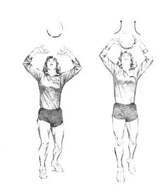

Levantamento
O Levantamento é realizado por um dos jogadores que assume a posição de levantador. Ele é o pilar do time, a torre de controle do jogo,
ele que planeja as jogadas de ataque após a recepção e é o que mais toque a bola durante a partida. Logo a seguir veremos o passo a passo
para se fazer um levantamento.
- O Levantador deve se posicionar próximo a rede para receber o Posse vindo de uma recepção ou de uma defesa
- Ao receber o Passe, deve manter as costas restas e flexionar levemente os joelhos
- Os braços ficam ligeiramente abertos, cotovelos acima dos ombros e formando um ângulo de 90º
- As mãos ficam um pouco acima da região da testa, abertas e a um pouco distante uma da outra em formato de concha
- Os dedos devem estar levemente esticados, com o polegar apontando pra frente e o indicador apontando para trás
- A bola deve ser toca, principalmente, com os dedos polegar e indicado (os demais dão apoio)
- No momento do toque na bola, as pernas devem ser esticadas, para impulsionar o movimento
- Ao mesmo tempo que os braços também são esticado para lançar a bola com os dedos

Voltar à Página Inicial e ver outros Fundamentos